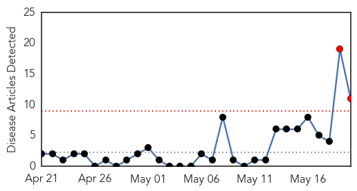
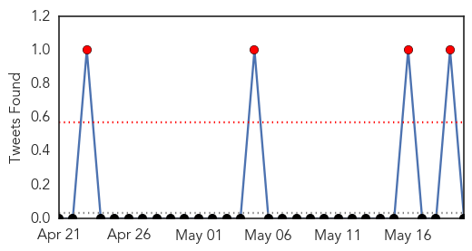
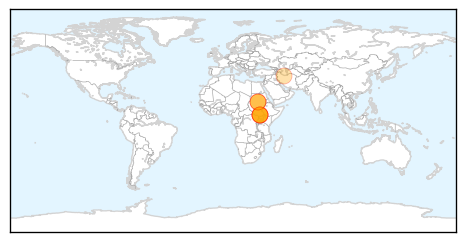
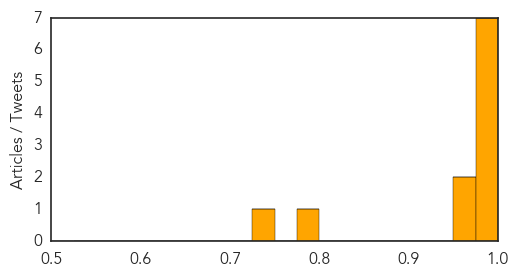

Toggle navigation
Early Warning
Daily Alerts
Cholera
May 20, 2014
Compare to:
-
Dengue Fever
Hemmorhagic Fever
Mold/Fungal Infection
Influenza
Meningitis
Pertussis / Whooping Cough
Middle East Respiratory Syndrome
Hepatitis
Chikungunya
Yellow Fever
Bubonic Plague
West Nile Virus
Swine Flu
Ebola
Measles
Unknown
Mumps
30 Day Trends
Web: 2
alerts
, 0
warnings
Twitter: 4
alerts
, 0
warnings
Top Articles:
0.998
Cholera cases rapidly multiplying in South Sudan - South Sudan
0.997
Cholera outbreak in war-torn South Sudan
0.995
UNICEF calls for $10 million to stop cholera outbreak in S. Sudan
0.994
Cholera cases rapidly multiplying in South Sudan
0.994
Wash your hands; prevent cholera – UNICEF tells RSS
0.989
Cholera outbreak in South Sudan claims three more lives infects more than 130
0.985
Farsnews
0.972
Nine dead in cholera outbreak in South Sudan capital - WHO
0.962
Nigerian News from Leadership News
0.800
Donors pledge over $600m for South Sudan
0.744
UNICEF fears the worst for hundreds of thousands of children in South Sudan
Top Tweets:
No tweets found for May 20, 2014
Web/News Articles

Tweets

Article Locations

Article Confidences
